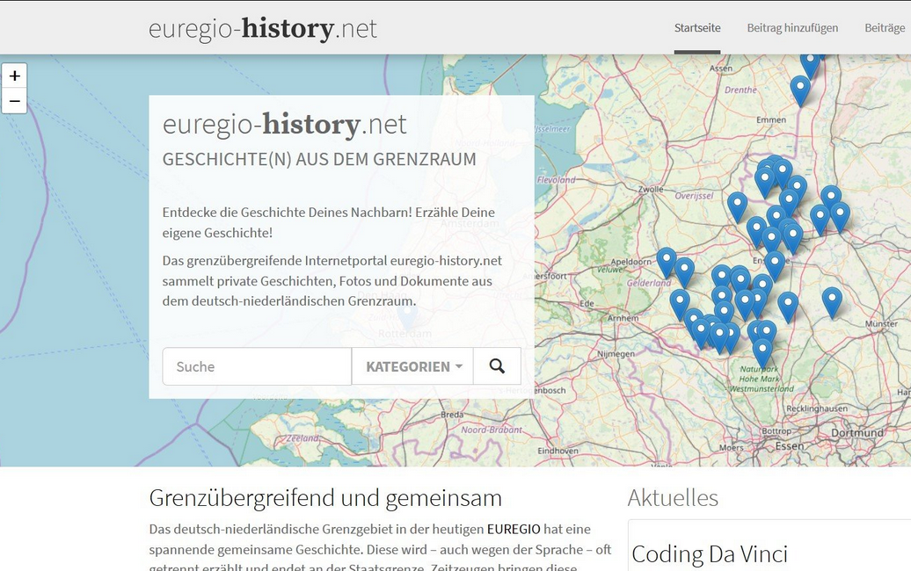
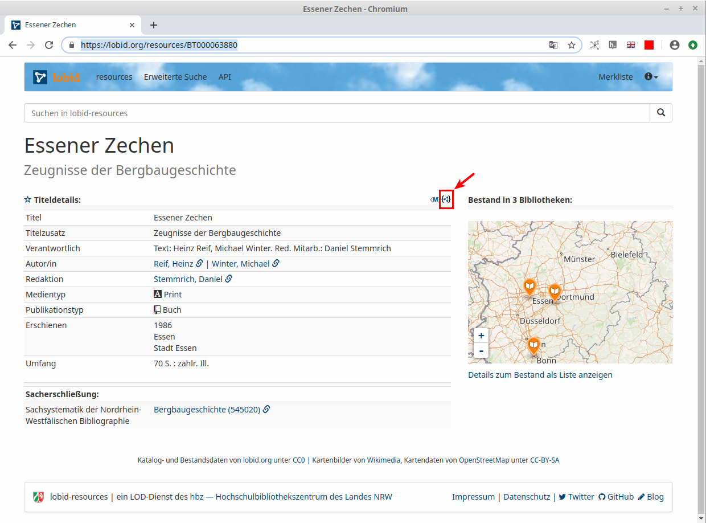
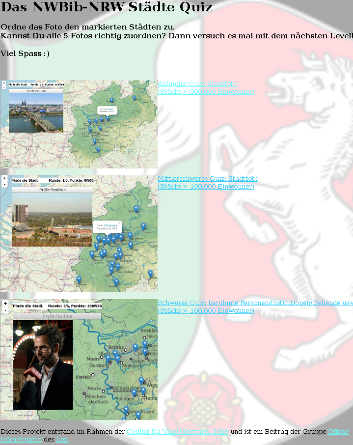
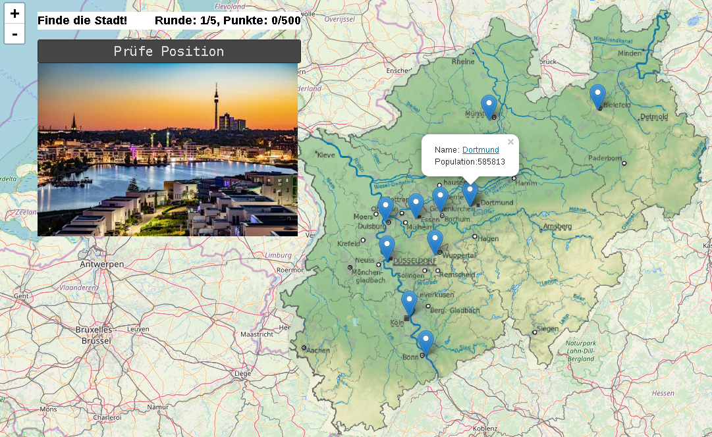
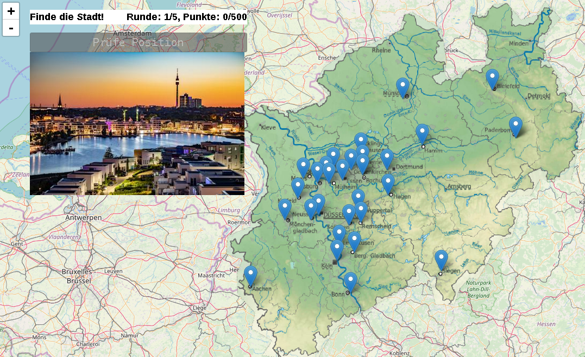

Projektpräsentationen euregio-history-map und NWBib-NRW Städte-Quiz
Pascal Christoph / @dr0ideLinked Open Data, Hochschulbibliothekszentrum NRW (hbz)

Dortmund, 2019-12-06
Diese Präsentation:
http://slides.lobid.org/nwbib-cdv-2019-jury/

Zwei Projekte: euregio-history-map und NWBib-NRW Städte-Quiz
beiden Projekten dient die Wikidata als Datengrundlage. Zusätzlich verwenden sie folgende Metadaten:
euregio-history: ca. 70 Geschichten, die in CdV hochgeladen wurden
Das NWBib-NRW Städte Quiz basiert auf der NRW-Landesbibliographie mit ca 400k Metadaten
euregio-history: Ausgangslage
sammelt Zeitzeugengeschichten im Grenzgebiet Niederlande-Deutschland
aktuell (2019) existieren mehr als 90 Geschichten
rudimentäre Metadaten, u.a. auch mit Ortsnamen
Projektleitung: Dr. Alexandra Bloch Pfister (ab@alexandra-bloch.de)
euregio-history: Anreicherung mit Geodaten
Die Idee war: interaktive Karte
Dazu: Städtenamen auf Wikidata Entitäten matchen
<= Geodaten aus Wikidata holen
Geodaten und Titeldaten in eine geojson-Datei
dies ermöglicht interaktive Karte mit javascript
Interaktive euregio-history Karte
euregio-history-map: TO DOs
40 von 70 Ortsnamen gematcht
Ideen zur Verbesserung des Matching
... Pro-Tipp: direkt Wikidata-IDs benutzen!
NWBib-NRW Städte-Quiz
basiert auf 20M hbz-Verbunddaten
alles CC0 lizensiert
lobid-resources exponiert diese als Linked Open Data
lobid-API: JSON(-LD) über HTTP
NWBib

JSON: via Klick oder .json 
Angabe des Ortsbezugs im JSON
{
"spatial":[
{
"focus":{
"id":"http://www.wikidata.org/entity/Q1250595",
"geo":{
"lat":51.5189,
"lon":7.32528
},
"type":[
"http://www.wikidata.org/entity/Q253019"
]
},
"id":"https://nwbib.de/spatial#Q1250595",
"type":[
"Concept"
],
"label":"Bövinghausen",
"source":{
"id":"https://nwbib.de/spatial",
"label":"Raumsystematik der Nordrhein-Westfälischen Bibliographie"
}
}
]
}Wie es zur Idee des Quiz' kam
unkonkrete Idee bei der Vorstellung des Datensets
keine konkrete Idee auf dem CdV-Anfangstreffen
erst Abends auf der Heimreise im Zug eingefallen
Dank des CdV Teams (@cdvwest) reagierte @_hanwong und verwies auf seinen nachnutzbaren Code
<= wichtig! Weil wir nicht genug/die richtigen Ressourcen hatten zur kompletten Neuentwicklung
Einstiegsseite: Levelauswahl
Model View Controller
jedes Level hat seinen eigenen geojson-Datensatz
ein neues Geo-Datenset muss mit nur einer Zeile konfiguriert werden
ansonsten bleibt alles gleich (Logik, Rendern)
=> leicht erweiterbar
Clou
Die Quiz-Sets (Bilder,Geodaten ...) sind automatisiert erzeugt!
Kartenoverlay
um NRW prominenter in die OSM einzubauen: topologische NRW Karte aus Wikicommons mittels Map Warper alignen und Tileset erstellen lassen
Beispiel: Level 1 - Städte ab 300k Einwohnern
Beispiel: Level 2 - Städte ab 100k Einwohnern
Daten verbessern: durch Gebrauch
Oberhausen hatte falsche Geodaten in Wikidata
(Siehst Du erst, wenn Du's siehst ...)
NWBib-NRW Städte-Quiz: TO DOs
Text, der die Bilder erklärt, nachdem sie zugeordnet wurden. Z.B. die "Cranger Kirmes" in Herne (nach dem Oktoberfest größtes Volkfest in BRD)
Code verbessern zur leichteren Nachnutzung, und Doku
Mehr Levels !
Weiterführende Informationen im Blogbeitrag "NWBib-Daten für Coding da Vinci".
Bei Fragen: Kontaktieren Sie uns über Mastodon, Twitter, IRC, E-Mail.